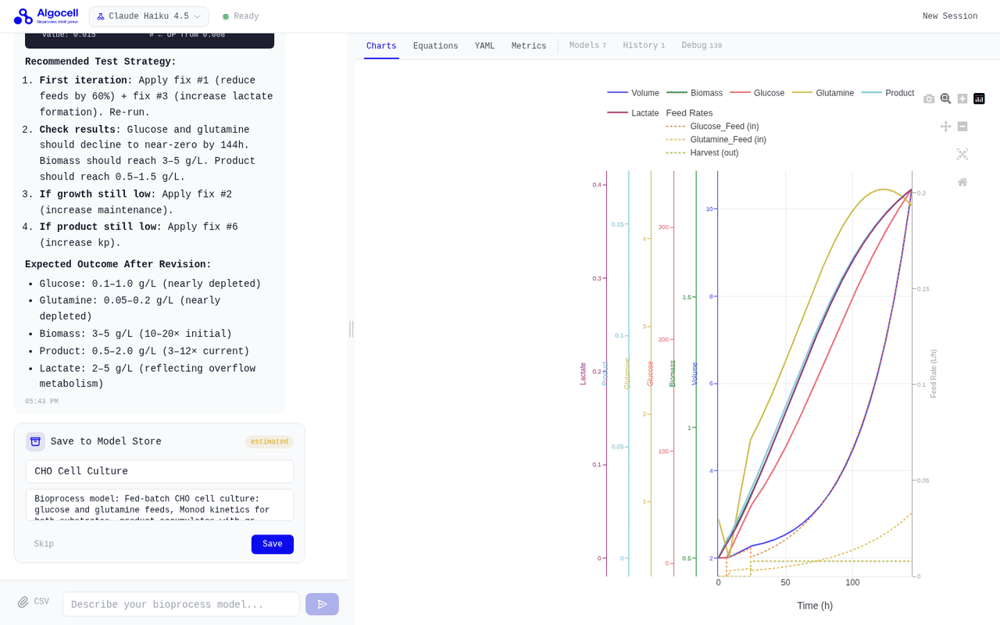
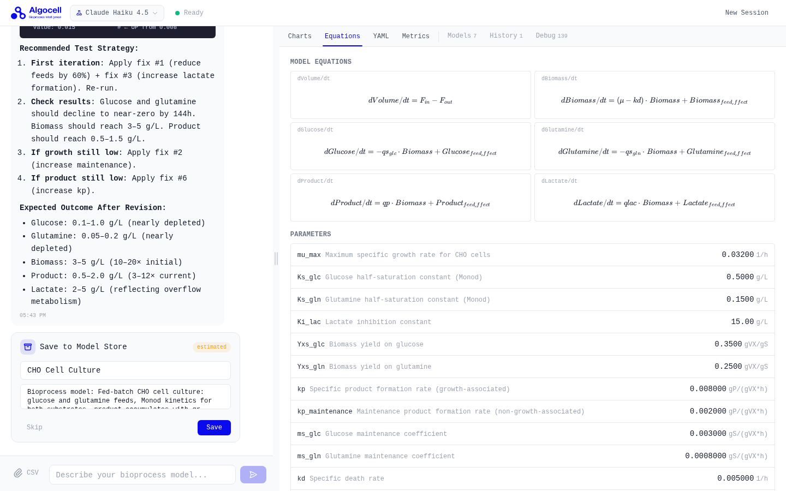
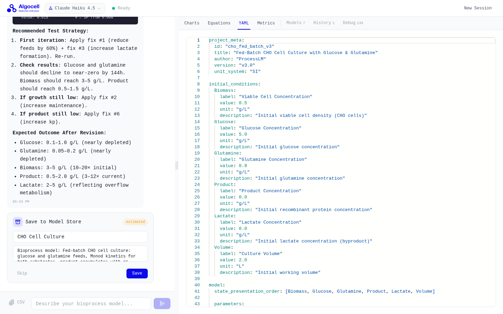
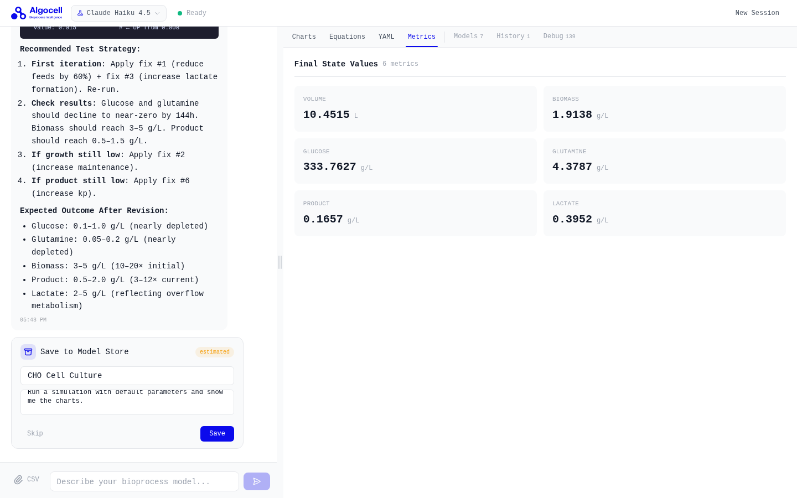
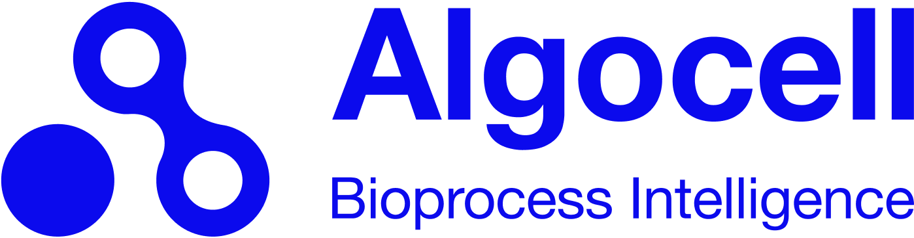

Describe your system in plain language. ProcessLM builds the mechanistic model, fits it to your experimental data, and identifies the operating conditions that maximize your target outcome.

ProcessLM collapses the design-build-test-learn loop into a conversational workflow. No modeling expertise required.
Explain your process in plain language — states, inputs, known physics, and what you want to achieve.
ProcessLM generates a validated ODE model with transparent equations you can inspect, edit, and export.
Upload experimental measurements. The model is automatically fitted and validated against your data.
Define your objective. ProcessLM finds the operating conditions that maximize your target outcome.
Every model ProcessLM generates is mathematically rigorous — transparent equations, validated calibration, and optimizable protocol. Here's what a CHO cell culture session looks like.



ProcessLM handles the full modeling stack — from equation generation to optimization — so your team can focus on the science.
Automatically generates ODE-based mechanistic models from natural language. Equations are fully transparent and editable.
Upload experimental CSV data. ProcessLM fits model parameters using cross-validation and reports R², RMSE, and uncertainty bounds.
Define objectives and constraints in plain language. The optimizer finds feed rates, temperatures, or timing schedules that maximize your target.
Run forward simulations over any time horizon. Explore what-if scenarios before committing to physical experiments.
Save, version, and reload calibrated models. Share across your team or build on previous experiments without starting from scratch.
Export calibrated models as YAML. Drop them into your existing pipelines — ProcessLM works with your tools, not against them.
Fit hybrid models using Neural ODEs, Physics-Informed Neural Networks (PINNs), Bayesian inference, and classical ODE solvers — the right algorithm for your data and system complexity.
LLM agents continuously analyze simulation results, identify structural weaknesses — missing dynamics, poor fit regions, unmodeled interactions — and autonomously propose and apply architectural changes to improve accuracy.
Every equation is visible, editable, and exportable. ProcessLM shows its work — you're always in control of the model structure and can override anything.
ProcessLM exports to YAML — drop it straight into your existing pipeline. It's an addition to your workflow, not a replacement.
No. ProcessLM is designed for scientists who understand their biology or chemistry but don't want to hand-code ODEs. If you can describe your system, ProcessLM can model it.

We build infrastructure for quantitative science.
Algocell was founded by scientists and engineers who spent years building and calibrating mechanistic models by hand — in MATLAB, Python, and custom simulation frameworks. ProcessLM is the tool we wished existed. We're building it in the open with our first users.
ProcessLM is in private alpha. Spots are limited — we onboard in small cohorts to work closely with early users.
Takes 2 minutes. No spam.
We're selecting a small first cohort of modelers to shape ProcessLM before public launch. Accepted members get direct access to the team, influence over the roadmap, and tools that aren't available anywhere else yet.
We review applications on a rolling basis and reach out directly. If your work is a strong fit for this cohort, you'll hear from us.